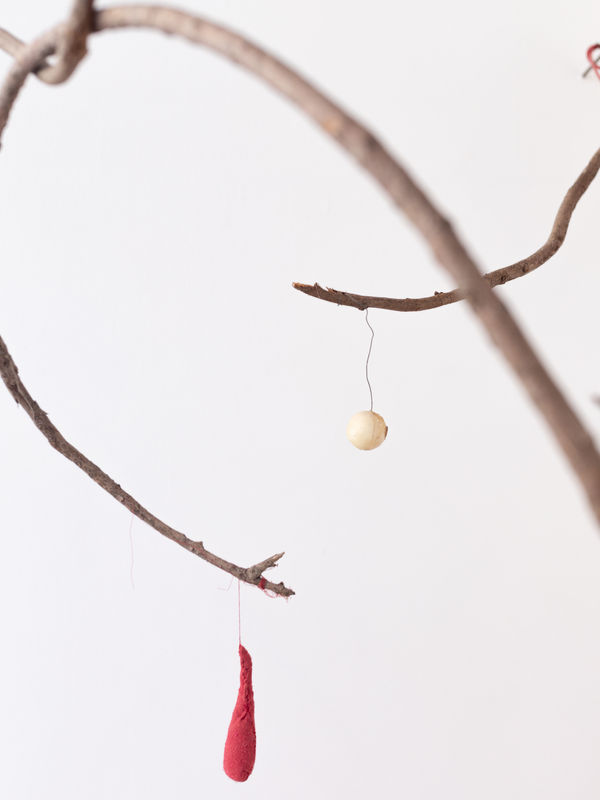

RAW LIMBS AND OTHER CURRENT EXPERIMENTS
Spring 2024 and still growing as an installation
The contemporary form of exodus and the new barbarian life demand that tools become poetic prostheses liberating us from the conditions of modern humanity.
— Michael Hardt and Antonio Negri, Empire
This is an installation using found and discarded local wood, reused materials and clay, also sourced from different sites, and engaging with craft, concept and materiality.
As a wood carver, I have been thinking a lot about trees, sustainability, where wood is sourced from, and how lumberyards and deforestation operate. If trees are live bodies and the limbs of trees are tender extensions, milling lumber to make limbs is not sitting well with me. It is slower to source wood with relationality, to be in conversation with trees and my materials, to feel the bodies of things. Some of the clay is sourced from deep underneath the Sales Force Tower, to make letters from the ASL alphabet, messages to decode as hints for world rebuilding.
As a conceptual artist, I am currently deeply embedded in the work of Brazilian Feminist philosopher Suely Rolnik, in decolonizing of the unconscious, the overriding impact of capital on all forms of subjectivity, desire, and of embryonic new formations. My search for the linkage between materiality and concept, between woodcarving and capital, between medical tubing and the end of the world can be found in the head on life support, wooden chains tinged with gold, piggy banks, melting happy face, ASL alphabet letters spelling SMASH PATRIARCHY and in abstract forms, the divisions of space where pieces grow into each other and emerge out of walls. And of course, in baby socks as tragic adornments for wood and tender limbs—there are a few scattered around the space.
